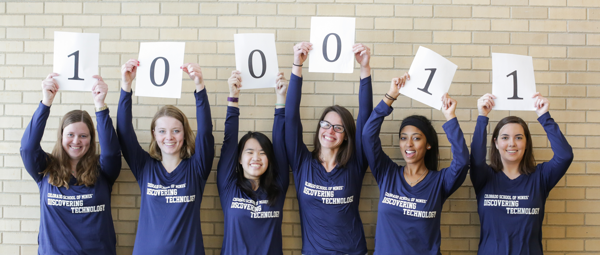
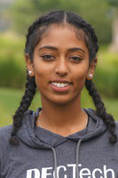
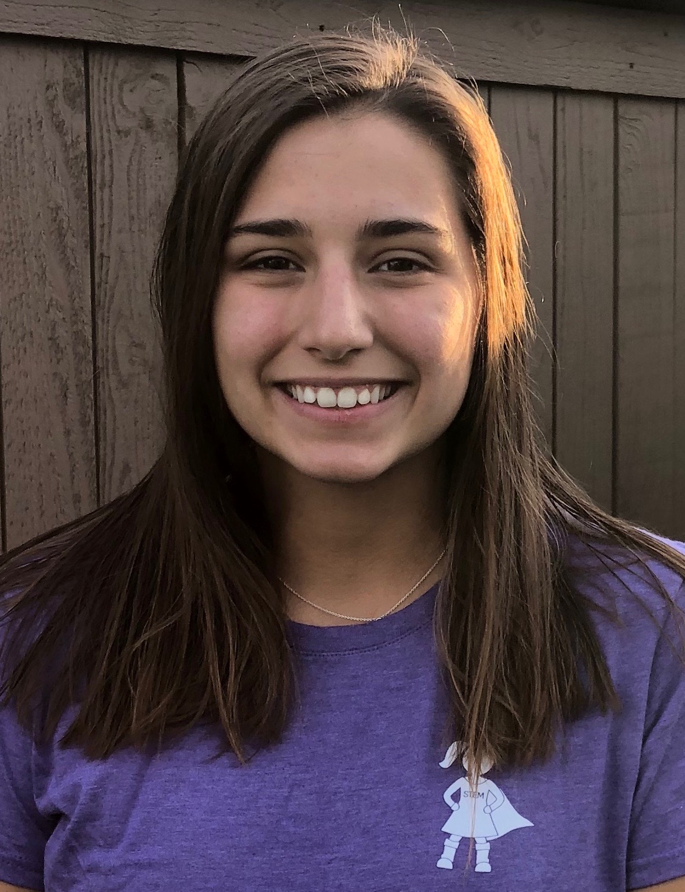
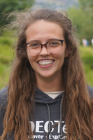
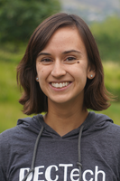
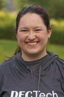

DISCOVER TECH
Registration for our Fall 2019 program is now open!
For 3rd - 6th Grade Girls
This program meets four times per semester on School of Mines campus. It introduces girls to a variety of STEM subjects through fun, hands-on activities.
- Time: 4:30-5:45
- Day: Offered Monday - Thursday (choose ONE day of the week, as listed below)
- Location: Colorado School of Mines campus
- Cost: $60 (includes program t-shirt)
2019 Fall Session days/dates
- 3rd/4th Grade (choose ONE session):
- MONDAY session: September 16, September 30, October 21, November 11
- TUESDAY session: September 17, October 1, October 22, November 12
- WEDNESDAY session: September 18, October 2, October 23, November 13
- THURSDAY session: September 19, October 3, October 24, November 14
- 5th/6th Grade (choose ONE session):
- MONDAY session: September 23, October 7, November 4, November 18
- TUESDAY session: September 24, October 8, November 5, November 19
- WEDNESDAY session: September 25, October 9, November 6, November 20
- THURSDAY session: September 26, October 10, November 7, November 21
Our DISCOVER Tech Instructors
Bethel is a senior majoring in Computer Science and minoring in Humanitarian Engineering. She loves her job because it makes her happy to see all of the DECtech girls gaining interest in STEM! Outside of work she likes to travel and spend time with friends and family.
Caitlin is a sophomore in Computer Science at Mines. She’s always had a passion for math and science and recently discovered her love for coding. This is her second year with DECtech and her first year as an instructor. She loves working with the girls and showing them how fun STEM can be. In her free time she enjoys rock climbing, playing volleyball, skiing, and anything else that keeps her active.
Leah is a junior majoring in Applied Mathematics at Mines. Her math studies have shown her how beautiful and under-appreciated it can be. She has a lot of experience mentoring and working with girls, and is always looking for ways that she can do her part in decreasing the gender gap in the STEM fields.
Megan is a 5th year senior studying Mechanical Engineering and Robotics. This is her 4th year working with the program and her 3rd as an instructor. She loves working with all the girls here at DECtech and she hopes to see them all in the STEM field someday!
Megan is a senior studying Mechanical Engineering and Robotics. This is her 3rd year working with Discover Tech and her 2nd as an instructor. She loves working with all the girls here at DECtech and she hopes to see them all in the STEM field someday!
Samyuktha is a sophomore at Mines studying Computer Science with a focus is Robotics & Intelligent Systems. This is her second year working with DECTech but her first as an instructor. She looks forward to working with all the amazing girls that come through the program, ready to inspire them to pursue a STEM education.
Have questions? Please visit our FAQ page and find answers to popular questions.
To register for this program, click the REGISTER link in the purple navigation bar above.
Need more information? Please email us at stem-tech@mines.edu
Financial scholarships available thanks to our sponsors